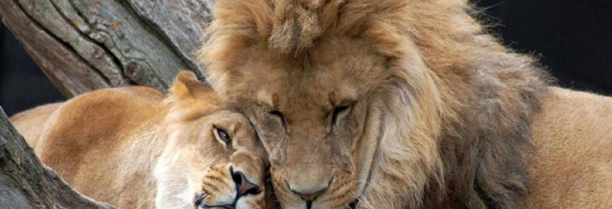

Hace algunos meses, el león más famoso de Zimbabue, Cecil, murió a manos de un médico dentista oriundo de EE.UU. Esto levantó una ola de indignación internacional, provocando una serie de manifestaciones de grupos ambientalistas a favor del cuidado de los animales.
Desde entonces se han desarrollado medidas de apoyo y protección a animales en peligro; entre ellas se encuentra la del gobierno de EE.UU., la cual coloca a los leones al sur de África bajo el manto protector de las leyes US Fish and Wildlife Service –FWS– al ser una especie en Peligro de extinción.
|  | |
Si bien el furor comenzó con la muerte de Cecil, esta medida pretende proteger a la declinante población de los leones africanos. En palabras de Dan Ashe, director de FWS, “el león es una de las especies más preciadas del planeta, también una parte irremplazable de nuestra herencia global. […] Si queremos asegurarnos que la salud de las poblaciones de leones continúe expandiéndose en las sabanas y bosques de la India, dependerá por completo de todos nosotros –no sólo los oriundos del lugar–.”
En los últimos 20 años, el 43 por ciento de esta población felina se redujo debido a la deforestación y caza furtiva. Por esta razón se decidió proteger a las subespecies Panthera leo leo, ubicado en India y al oeste-centro de África, y Panthera leo melanochaita, al sureste de África, al entrar a la categoría de ser especies en Peligro de extinción.
Es decir que a partir de ahora, 1 400 Panthera leo leo y 17 000 Panthera leo melanochaita tienen la protección de la FWS, prohibiendo así su importación a los EE.UU. Esto permitirá crear una serie de regulaciones en función de la caza furtiva, importación/exportación y maltrato.